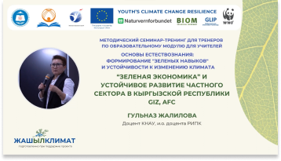

Публикации БИОМа
#Cool tag
#Cool tag2

Биоразнообразие. Экомедаль
Направление: Сохранение биоразнообразия
Дата публикации: 20 апреля 2023 г.
Язык: русский
Руководства для молодежи созданы ЮНГА в качестве дополнения к серии нашивок. Они помогают получить более подробное представление о каждой из тем нашивок, рассмотреть все аспекты затронутых проблем и возможные пути их решения. Руководства также содержат ссылки на дополнительные информационные ресурсы, с помощью которых можно самостоятельно изучить заинтересовавшие вас вопросы.
загрузить

Биоразнообразие. Экомедаль
Направление: Сохранение биоразнообразия
Дата публикации: 20 апреля 2023 г.
Язык: русский
Руководства для молодежи созданы ЮНГА в качестве дополнения к серии нашивок. Они помогают получить более подробное представление о каждой из тем нашивок, рассмотреть все аспекты затронутых проблем и возможные пути их решения. Руководства также содержат ссылки на дополнительные информационные ресурсы, с помощью которых можно самостоятельно изучить заинтересовавшие вас вопросы.
загрузить